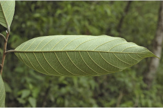
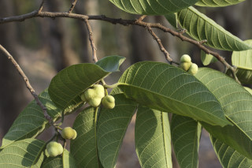
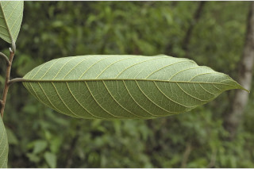
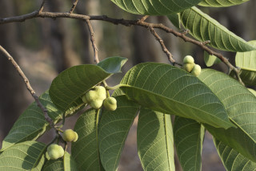

Deciduous trees, up to 35 m tall.
35 ಮೀ. ಎತ್ತರದವರೆಗಿನ ಎಲೆಯುದುರು ಮಾದರಿಯ ದೊಡ್ಡ ಮರಗಳು.
Deciduous trees, up to 35 m tall.
இலையுதிர் மரம், 35 மீ. உயரம் வரை வளரக்கூடியது.
Bark brownish, flaking in small scales, lenticellate; blaze reddish.
ತೊಗಟೆ ಕಂದು ಬಣ್ಣದಲ್ಲಿದ್ದು ಸಣ್ಣದಾದ ಶಲ್ಕೆಗಳಾಗಿ ಸುಲಿಯುತ್ತವೆ ಹಾಗೂ ಸೂಕ್ಷ್ಮ ವಾಯುವಿನಿಮಯ ಬೆಂಡು ರಂಧ್ರಗಳ ಸಮೇತವಿರುತ್ತವೆ;ಕಚ್ಚು ಮಾಡಿದ ಜಾಗ ಕೆಂಪು ಬಣ್ಣದಲ್ಲಿರುತ್ತದೆ.
Bark brownish, flaking in small scales, lenticellate; blaze reddish.
மரத்தின் பட்டை ப்ரவுன் நிறமானது, சிறிய செதில்களாக உதிருபவை, பட்டைத்துளைகள் (லெண்டிசெல்லேட்) உடையது; உள்பட்டை சிவப்பு நிறமானது.
Young branchlets terete, minutely grey pubescent.
ಎಳೆ ಕಿರುಕೊಂಬೆಗಳು ದುಂಡಾಗಿದ್ದು ಸೂಕ್ಷ್ಮ ಬೂದು ಬಣ್ಣದ ಮೃದು ತುಪ್ಪಳದಿಂದ ಕೂಡಿರುತ್ತವೆ
Young branchlets terete, minutely grey pubescent.
சிறியநுனிக்கிளைகள் குறுக்குவெட்டுத் தோற்றத்தில் வளையமானது, சிறிய சாம்பல் நிறமான உரோமங்களுடையது.
Latex white, profuse.
ಜಿನುಗು ದ್ರವ ಬಿಳಿ ಬಣ್ಣದಲ್ಲಿದ್ದು ವಿಫುಲವಾಗಿರುತ್ತದೆ.
Latex white, profuse.
வெள்ளை நிற பால் அதிகளவு சுரக்கிறது
Leaves simple, alternate, spiral; stipules small caducous, leaving scars on either side of petiole; petiole 1-3 cm long, terete, grey pubescent; lamina 10-30. 5 x 5.5-11 (-16) cm, oblong to oblong-lanceolate, apex caudate - acuminate, base acute to rounded or subtruncate, margin entire (sometimes serrate when young), coriaceous, glabrous above except midrib, velvety grey pubescent beneath; midrib slightly raised above; secondary_nerves 10-14 pairs; tertiary_nerves broadly reticulate.
ಎಲೆಗಳು ಸರಳವಾಗಿದ್ದುಪರ್ಯಾಯ ಮತ್ತು ಸುತ್ತು ಜೋಡನಾ ವ್ಯವಸ್ಥೆಯಲ್ಲಿರುತ್ತವೆ; ಕಾವಿನೆಲೆಗಳು ಸಣ್ಣ ಗಾತ್ರದವುಗಳಾಗಿದ್ದು, ಉದುರಿ ಹೋದಾಗ ಎಲೆ ತೊಟ್ಟಿನ ಎರಡೂ ಬದಿಯಲ್ಲಿ ಗುರುತನ್ನು ಉಳಿಸುತ್ತವೆ; ತೊಟ್ಟುಗಳು 1-3 ಸೆಂ.ಮೀ. ಉದ್ದ ಹೊಂದಿದ್ದು ದುಂಡಾಗಿರುತ್ತವೆ ಹಾಗೂ ಬೂದು ಬಣ್ಣದ ಮೃದುತುಪ್ಪಳವನ್ನು ಹೊಂದಿರುತ್ತವೆ;ಪತ್ರಗಳು 10-30.5 X 5.5 – 11(-16) ಸೆಂ.ಮೀ. ಗಾತ್ರವಿದ್ದು ಚತುರಸ್ರದಿಂದ ಚತುರಸ್ರ-ಭರ್ಜಿಯವರೆಗಿನ ಆಕಾರ ಹೊಂದಿದ್ದು,ಬಾಲರೂಪಿ- ಕ್ರಮೇಣ ಚೂಪಾಗುವ ತುದಿ,ಚೂಪಾದುದರಿಂದ ಹಿಡಿದು ಛಿನ್ನಾಗ್ರದವರೆಗಿನ ಆಕಾರದ ಬುಡ,ನಯವಾದ ಅಂಚು (ಕೆಲವು ವೇಳೆ ಎಳೆಯದಾಗಿದ್ದಾಗ ಗರಗಸ ದಂತಿತವಾಗಿರುತ್ತವೆ) ತೊಗಲನ್ನೋಲುವ ಮೇಲ್ಮೈ ಹೊಂದಿರುತ್ತವೆ, ಪತ್ರಗಳ ಮೇಲ್ಭಾಗ ಮಧ್ಯನಾಳವನ್ನು ಹೊರತು ಪಡಿಸಿ ರೋಮರಹಿತವಾಗಿರುತ್ತವೆ ಹಾಗೂ ತಳ ಭಾಗ ಮಖಮಲ್ಲಿನ ರೀತಿಯ ಮೃದು ತುಪ್ಪಳದಿಂದ ಕೂಡಿರುತ್ತವೆ; ಮಧ್ಯ ನಾಳ ಮೇಲ್ಭಾಗದಲ್ಲಿ ಕೊಂಚ ಮೇಲೆದ್ದಿರುತ್ತದೆ;ಎರಡನೇ ದರ್ಜೆಯ ನಾಳಗಳು 10 ರಿಂದ 14 ಜೋಡಿಗಳಿರುತ್ತವೆ;ಮೂರನೇ ದರ್ಜೆಯ ನಾಳಗಳು ವಿಶಾಲಜಾಲಬಂಧ ನಾಳವಿನ್ಯಾಸದಲ್ಲಿರುತ್ತವೆ.
Leaves simple, alternate, spiral; stipules small caducous, leaving scars on either side of petiole; petiole 1-3 cm long, terete, grey pubescent; lamina 10-30. 5 x 5.5-11 (-16) cm, oblong to oblong-lanceolate, apex caudate - acuminate, base acute to rounded or subtruncate, margin entire (sometimes serrate when young), coriaceous, glabrous above except midrib, velvety grey pubescent beneath; midrib slightly raised above; secondary_nerves 10-14 pairs; tertiary_nerves broadly reticulate.
இலைகள் தனித்தவை, மாற்றுஅடுக்கமானவை, சுழல் போன்று அமைந்தவை; இலையடிச்செதில் சிறியவை, எளிதில் உதிரக்கூடியவை மற்றும் தழும்புகளை ஏற்படுத்தவல்லது; இலைக்காம்பு 1-3 செ.மீ. நீளமானது, குறுக்குவெட்டுத் தோற்றத்தில் வளையமானது, சாம்பல் நிறமான உரோமங்களுடையது; இலை அலகு 10-30. 5 X 5.5-11 (-16) செ.மீ., நீள்சதுர வடிவானது முதல் நீள்சதுர-ஈட்டி வடிவானது, அலகின் நுனி வால்-அதிக்கூரியது, அலகின் தளம் கூரியது முதல் வட்டமானது அல்லது சதுர வடிவானது, அலகின் விளிம்பு முழுமையானது (சிலசமயங்களில் இளம்பருவத்தில் ரம்ப பற்களுடையது), கோரியேசியஸ், அலகின் மேற்பரப்பில் மையநரம்புயை தவிர பிற பகுதிகள் உரோமங்களற்றது, கீழ்பரப்பு மெண்மையான சாம்பல் நிறமான உரோமங்களுடையது; மையநரம்பு மேற்புறத்தில் அலகின் பரப்பைவிட சிறிது உயர்ந்து இருக்கும்; இரண்டாம் நிலை நரம்புகள் 10-14 ஜோடிகள்; மூன்றாம் நிலை நரம்புகள் அகன்ற வலைப்பின்னல் போன்றவை.
Inflorescence axillary; flowers unisexual; male flowers in globose heads, peduncles 1-1.8 cm long; female flowers in globose heads, anthocarp completely united.
ಪುಷ್ಪಮಂಜರಿ ಅಕ್ಷಾಕಂಕುಳಿನಲ್ಲಿರುತ್ತವೆ;ಹೂಗಳು ಏಕಲಿಂಗಿಗಳು; ಗಂಡು ಹೂಗಳು ಗೋಳಾಕಾರದ ಚೆಂಡುಗಳಲ್ಲಿರುತ್ತವೆ ಹಾಗೂ 1 ರಿಂದ 1.8 ಸೆಂ.ಮೀ ಉದ್ದದ ವೃಂತವನ್ನು ಹೊಂದಿರುತ್ತವೆ;ಹೆಣ್ಣು ಹೂಗಳು ಗೋಳಾಕಾರದ ಚೆಂಡುಗಳಲ್ಲಿರುತ್ತವೆ, ಆಂತೋಕಾರ್ಪು ಸಂಪೂರ್ಣವಾಗಿ ಸಂಯುಕ್ತಗೊಂಡಿರುತ್ತದೆ.
Inflorescence axillary; flowers unisexual; male flowers in globose heads, peduncles 1-1.8 cm long; female flowers in globose heads, anthocarp completely united.
மஞ்சரி இலைக்கோணங்களில் காணப்படுபவை ; மலர்கள் ஓர் பாலானவை; ஆண் மலர்கள் கோளவடிவான தலை வகை மஞ்சரியில் அமைந்தவை, மஞ்சரிக்காம்பு 1-1.8 செ.மீ. நீளமானது; பெண் மலர்கள் கோளவடிவான தலை வகை மஞ்சரியில் அமைந்தவை, ஆந்தோகார்ப் முழுவதும் முடியவை.
Syncarp (sorosis), to 5 cm across, subglobose, yellow when ripe; seeds many.
ಸಂಯುಕ್ತ ಫಲ(ತಿರುಳುಳ್ಳ ಸಂಯುಕ್ತ ಫಲ) 5 ಸೆಂ.ಮೀ. ವರೆಗಿನ ಅಡ್ಡಗಲತೆಯನ್ನು ಹೊಂದಿದ್ದು, ಉಪಗೋಳಾಕಾರದಲ್ಲಿರುತ್ತವೆ ಮತ್ತು ಕಳೆತಾಗ ಹಳದಿ ಬಣ್ಣದಲ್ಲಿರುತ್ತವೆ; ಬೀಜಗಳು ಹೆಚ್ಚಿನ ಸಂಖ್ಯೆಯಲ್ಲಿರುತ್ತವೆ.
Syncarp (sorosis), to 5 cm across, subglobose, yellow when ripe; seeds many.
சின்கார்ப் (சொரோசிஸ்), 5 செ.மீ. குறுக்களவுடையது, கோளவடிவானது, கனியும் போது மஞ்சள் நிறமானவை ; விதைகள் எண்ணற்றவை.


 


